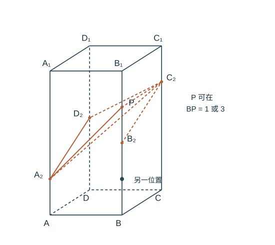

题目
正四棱柱
中，。点
分别在四条侧棱上，。
（1）证明
；
（2），二面角
为
，求
。
解题步骤
步骤 1 列出各分点的空间坐标
以
为原点，
为正向坐标轴，则
步骤 2 第（1）问，比较方向向量
因此
两条直线不同，故
。

分点高度按题设绘制；示出 BP=3 的位置，并标出 BP=1 的另一位置。空间示意不能代替二面角检验。
步骤 3 法向量给出长度，方向检验排除歧义
设
，。棱
的方向向量为
。
平面
的一个法向量为
；平面
的一个法向量为
法向量由数量积为零求出，而不是直接套未知公式：对第一个平面，令法向量
与
、
垂直，得到
、。取
，得
。对第二个平面，还需与
垂直；代入
，两数量积分别为
和
，所以所取法向量有效。由于二面角为
，法向量夹角余弦的绝对值为
，所以
平方整理得
，所以
，即
或
。
步骤 4 检查实际二面角
为什么还要检验角的方向？法向量的正反方向可任意选，取绝对值只能得到两平面的锐夹角。为求题目指定的两个半平面之间的角，令
、，分别去掉与棱方向平行的分量：
所得向量仍在各自半平面内，且与棱垂直，夹角就是二面角的平面角。这里
，两投影系数分别为
、，于是
当
或 3 时，二者数量积为
，模之积为
，夹角余弦为
，确实对应
。
两种位置都有
。